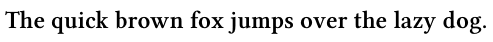
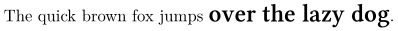
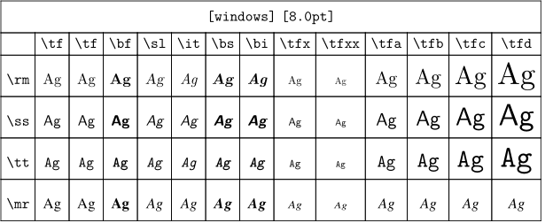

Contents
Fonts location on your computer
The first step is to declare the storage locations of the fonts you want ConTeXt to consider, for example, any fonts you would have downloaded from
- Fonts Squirrel Google Fonts
- Available Free Fonts
- Le catalogue de fontes libres , from Daniel Flipo
- The LaTeX Font Catalogue
Either way, ConTeXt will use fonts properly stored in its tree structure
-
TeX users create a new folder for each new font in
tex/texmf-fonts/fonts/, following TeX Directory Structure .- it helps the algorithms to deal with the incredibly wide variety of fonts's variables and parameters.
- People who handle a lot of fonts can be more structured by using
-
tex/texmf-fonts/fonts/truetype/vendor/fontfamily.
But it it's very likely that you also want to use the fonts already available on your Operating System:
- 1. Specify where ConTeXt should looked for fonts, by setting the OSFONTDIR environment variable.
-
-
WINDOWS:
set OSFONTDIR=c:/windows/fonts/ -
MAC:
export OSFONTDIR=/Library/Fonts/:/System/Library/Fonts:$HOME/Library/Fonts -
GNU/LINUX:
export OSFONTDIR=$HOME/.fonts:/usr/share/fonts - Add it to your .bashrc or shell equivalent to make the declaration permanent.
-
WINDOWS:
- 2. Run ConTeXt to index the files and the fonts
mtxrun --generate mtxrun --script fonts --reload
- 3. Check by looking for the specific font you want to use next. A common example
mtxrun --script fonts --list --all --pattern='*helvetica*'
NOTE : In recent versions of ConTeXt (2023), the use of wildcards is no longer necessary to check for the presence of a particular font.
In addition, it is no longer necessary to tell ConTeXt where the fonts are located (on Windows or Apple Mac), as a routine has been implemented in
mtxrun.lua
that automates the font search. If no value for OSFONTDIR is set, then mtxrun.lua looks to the directory. Here is the code of mtxrun.lua (given here as information) :
do local osfontdir=osgetenv("OSFONTDIR") if osfontdir and osfontdir~="" then elseif osname=="windows" then ossetenv("OSFONTDIR","c:/windows/fonts//") elseif osname=="macosx" then ossetenv("OSFONTDIR","$HOME/Library/Fonts//;/Library/Fonts//;/System/Library/Fonts//") end end
On the other hand, if the routine seeks to locate fonts on Windows and Mac, insofar as we are seeking to install new fonts for the Linux system, we must ask ConTeXt — as indicated above — for the path that leads to the directory where the new fonts are deposited; in this case
tex/texmf-fonts/fonts/
. Then you'll need to empty the font cache and regenerate it, so that the
mtxrun --script fonts --list --all --pattern=didot
command can return something (if you've installed a GFS Didot, or Theano Didot font, for example).
To empty the cache and regenerate it, enter the following command (in the directory : /home/johndoe/context/tex/texmf-linux64/bin):
mtxrun --script cache --erase && mtxrun --generate
Now you can search for the font you've just installed.
Now, let's learn how to use them for typesetting.
Practical application #1 - Quick use of a new font
Let's take an example: we want to use Noto Serif.
If it is already installed on your computer, and you already updated the ConTeXt databases like shown previously, go directly to #2.
It not, you have to download and store it first. The Google website provides a zip file with the 4 alternative variations (Regular 400, Regular 400 italic, Bold 700, Bold 700 italic).
- #1. Store them in a dedicated folder indexed by ConTeXt .
-
-
for example, create a "Noto-serif" in the ConTeXt distribution
tex/texmf-fonts/fonts/. -
unzip and store the .ttf file in
tex/texmf-fonts/fonts/Noto-serif/. -
Regenerate ConTeXt databases
-
the file database:
mtxrun --generate -
the fonts database:
mtxrun --script font --reload
-
the file database:
-
for example, create a "Noto-serif" in the ConTeXt distribution
- #2. Now you can check the fontname used to identify the fonts,
-
-
run
mtxrun --script font --list --file -pattern=*noto*. You should obtain something like
-
run
familyname weight style width variant fontname filename subfont fontweight notoserif bold normal normal normal notoserifbold NotoSerif-Bold.ttf notoserif bold italic normal normal notoserifbolditalic NotoSerif-BoldItalic.ttf notoserif normal italic normal normal notoserifitalic NotoSerif-Italic.ttf notoserif normal normal normal normal notoserif NotoSerif-Regular.ttf
- #3. You are done! You can use the font anywhere in your input files with \definedfont or with \definefont to define a dedicated command
-
-
it's good to add
*defaultto benefit from default features, like for example kerning .
-
it's good to add
-
\definedfont[name:libertinusserifsemibold*default at 12 pt] \framed[frame=off, align=normal] {The quick brown fox jumps over the lazy dog.}
- 
-
\definefont [useWarningFont] [name:libertinusserifsemibold*default at 12pt] \framed[frame=off, align=normal] {The quick brown fox jumps {\useWarningFont over the lazy dog}.}
- 
Practical application #2 - Use the different font variations
- It's not nice to have to write \definedfont[name:yoursuperfont-weightstyle*default at xxpt] each time you want to use a particular font.
- That why it's worth defining a typescript . It's just 3 steps, and less than 5 minutes. Then, you will be able to easily switch between fonts with \tf , \it , \bf , \bi (see Font styles and alternatives ), and all the typesetting of your document will use a consistent set of fonts.
- Many typescripts are ready for use on usual free and commercial fonts, and obviously for the ConTeXt distribution's Fonts .
- #1. Define a new typescript in your input file, with \starttypescript .
-
- Define the links between filenames and People-readable names with \definefontsynonym .
- In this example, the typescript is called "mynotoserif".
-
Reminder: you find the filenames for the Noto Serif fonts with
mtxrun --script font --list --file -pattern=*noto*:
\starttypescript [mynotoserif] % \definefontsynonym[Human readable] [file:filename without extension] \definefontsynonym[NotoSerif-Regular] [file:NotoSerif-Regular] \definefontsynonym[NotoSerif-Italic] [file:NotoSerif-Italic] \definefontsynonym[NotoSerif-Bold] [file:NotoSerif-Bold] \definefontsynonym[NotoSerif-BoldItalic] [file:NotoSerif-BoldItalic] \stoptypescript
- #2. The boring step, define the links between ConTeXt basics names and the People-readable names .
-
- It's good to add a fallback.
\starttypescript [mynotoserif] \setups[font:fallback:serif] % security: if not found==> back to defaults % \definefontsynonym[ConTeXt basics name] [Human readable] [features=default] \definefontsynonym[Serif] [NotoSerif-Regular] [features=default] \definefontsynonym[SerifItalic] [NotoSerif-Italic] [features=default] \definefontsynonym[SerifBold] [NotoSerif-Bold] [features=default] \definefontsynonym[SerifBoldItalic] [NotoSerif-BoldItalic] [features=default] \stoptypescript
- #3. Define the pack of the 4 variations as the roman typeface of the typescript "mynotoserif"
\starttypescript [mynotoserif] \definetypeface [mynotoserif] [rm] [serif] [mynotoserif] [default] \stoptypescript
- #4. You are done! Finally, we have the following input file
\starttypescript [mynotoserif] \definefontsynonym[NotoSerif-Regular] [file:NotoSerif-Regular] \definefontsynonym[NotoSerif-Italic] [file:NotoSerif-Italic] \definefontsynonym[NotoSerif-Bold] [file:NotoSerif-Bold] \definefontsynonym[NotoSerif-BoldItalic] [file:NotoSerif-BoldItalic] \stoptypescript \starttypescript [mynotoserif] \setups[font:fallback:serif] \definefontsynonym[Serif] [NotoSerif-Regular] [features=default] \definefontsynonym[SerifItalic] [NotoSerif-Italic] [features=default] \definefontsynonym[SerifBold] [NotoSerif-Bold] [features=default] \definefontsynonym[SerifBoldItalic] [NotoSerif-BoldItalic] [features=default] \stoptypescript \starttypescript [mynotoserif] \definetypeface [mynotoserif] [rm] [serif] [mynotoserif] [default] \stoptypescript \setupbodyfont[mynotoserif] \setupbodyfont[12pt] { The quick brown fox jumps over the lazy dog}\\ {\it The quick brown fox jumps over the lazy dog}\\ {\bf The quick brown fox jumps over the lazy dog}\\ {\bi The quick brown fox jumps over the lazy dog}\\
And it gives:
{kind=link}
Install your new typescript to use it anywhere
You will probably want to use your new customized typescript definition across different documents, so you have to install them in the distribution. Here, we remind the definition:
\starttypescript [mynotoserif] \definefontsynonym[NotoSerif-Regular] [file:NotoSerif-Regular] \definefontsynonym[NotoSerif-Italic] [file:NotoSerif-Italic] \definefontsynonym[NotoSerif-Bold] [file:NotoSerif-Bold] \definefontsynonym[NotoSerif-BoldItalic] [file:NotoSerif-BoldItalic] \stoptypescript \starttypescript [mynotoserif] \setups[font:fallback:serif] \definefontsynonym[Serif] [NotoSerif-Regular] [features=default] \definefontsynonym[SerifItalic] [NotoSerif-Italic] [features=default] \definefontsynonym[SerifBold] [NotoSerif-Bold] [features=default] \definefontsynonym[SerifBoldItalic] [NotoSerif-BoldItalic] [features=default] \stoptypescript \starttypescript [mynotoserif] \definetypeface [mynotoserif] [rm] [serif] [mynotoserif] [default] \stoptypescript
-
Save your file as
type-(some-name-you-like).tex, for example heretype-mynotoserif.tex -
Copy the typescript files into
tex/texmf-fonts/tex/context/user/ -
Run
context --generateto update ConTeXt file database - It's done! Now, two lines at the beginning of any input will declare to typeset with the new fonts:
\usetypescriptfile[mynotoserif] % this is the 'some-name-you-like' part of the saved filename \setupbodyfont[mynotoserif] % this is the first argument to \definetypeface
Note
The naming convention for typescript files has changed in LMTX
There has been a change in the naming of typescript file, a simple
"type-"prefix isn't anough anymore, you have to change it to"type-imp-"(e.g. type-imp-sourceserif.tex) to be found by ConTeXt.Valid file extensions for a typescript file in LMTX (and MkIV) are "tex", "mkiv" and "mkxl".
Wolfgang [20 Dec 2020]
How can I use a font without using a typescript ?
mailing list 2024.05.16 "Defining typescripts to use a font is very painful. How can I use a font without using a typescript?"
Use \definefontfamily and \definetypeface :
-
\definefontfamily [windows] [rm] [Times New Roman] \definefontfamily [windows] [ss] [Arial] \definefontfamily [windows] [tt] [Courier New] [features=none] \definetypeface [windows] [mm] [math] [termes] % use \definetypeface to load a math font \setupbodyfont[windows] \showbodyfont
- 